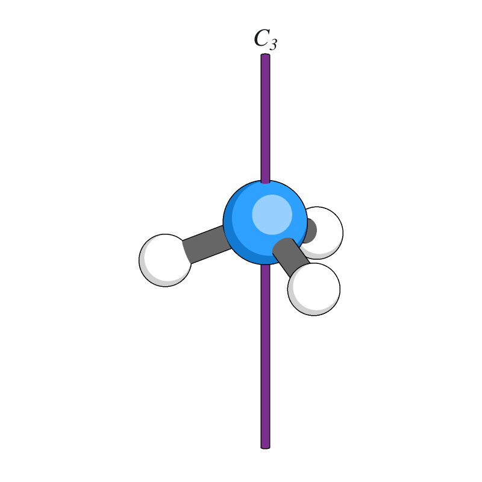
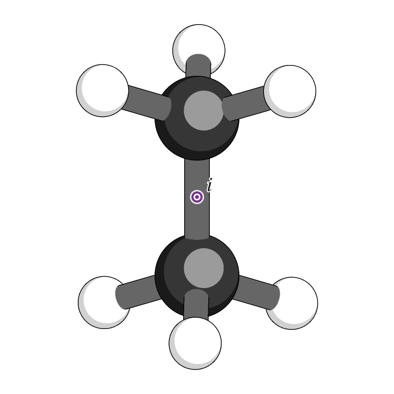

Point-group symmetry elements
QASR draws where one symmetry operation of a molecule lies: the axis of a rotation, the plane of a reflection, both for an improper rotation, or the centre of an inversion. One image shows one operation. The element is part of the scene, so atoms hide the part of an axis behind them and a translucent plane tints only what lies behind it.





Inputs: nh3.xyz, benzene.xyz and ethane.xyz. The source package has six molecules and fourteen recipes in examples/symmetry/.
Name the operation
qasr examples/nh3.xyz --no-user-config --style illustrated --cell off --view 3,-5,2 --symmetry C3 --symmetry-axis 0,0,1 -o ammonia-c3.png| Operation | Drawn element | Direction |
|---|---|---|
E (also C1) | Label only | None |
Cn, n = 2–99 | Rod along the axis | Axis |
sigma, sigma_h, sigma_v, sigma_d (also S1) | Translucent plane | Plane normal |
Sn, n = 3–99 | Rod and the perpendicular plane | Axis |
i (also S2) | Ringed dot at the centre | None |
--symmetry-axis X,Y,Z gives the direction and --symmetry-origin X,Y,Z a point on the element in ångströms. Without an origin, the element passes through the centroid of the atoms. The suffix of a mirror plane only selects its label.
QASR checks the operation first
Before drawing, every atom is transformed and compared with the nearest atom of the same element. If the largest distance exceeds 0.1 Å, the render fails with exit code 5 and names the worst atom, so a wrong axis, origin or order does not reach a figure:
qasr: symmetry: C4 does not map the structure onto itself: atom 2 (H) lands 0.485 A from the nearest like atom (tolerance_A 0.1). Check the axis/origin, raise tolerance_A, or set verify falseRaise tolerance_A for an imperfectly relaxed geometry, or set verify to false to draw the element regardless. Reports and --inspect-scene record the resolved origin, axis and largest deviation.
Use atoms and styling in a recipe
{"image":{"style":"illustrated"},"overlays":{"cell":false},
"symmetry":{"operation":"C2","axis_atoms":[3,0],"axis_style":"dashed","label":"C_2'"}}| Field | Default | Meaning |
|---|---|---|
operation | Required | One of the operations above. |
axis / normal | — | Direction as a Cartesian vector. |
axis_atoms | — | Two zero-based atom indices; the axis runs through both. |
plane_atoms | — | Three atom indices; the direction is normal to their plane, and a mirror plane passes through them. |
origin_A / origin_atoms | Centroid | A point in Å, or the centroid of 1–64 chosen atoms. |
verify, tolerance_A | true, 0.1 | The check described above. |
label, show_label | Automatic, true | Replacement text; an underscore starts a subscript. |
label_font, label_scale, label_color | italic, 1, #181c20 | italic or sans lettering, its size factor and color. |
axis_style, axis_radius_A, axis_color | solid, 0.045, #7a2f8f | Solid or dashed rod, its radius and color. |
plane_shape, plane_color | auto, #f0a63a59 | auto, rectangle or disc; fill with optional alpha. |
plane_outline_color, plane_outline_width | #b8741a, 1.5 | Boundary color and width in pixels. |
padding_A | 0.7 | How far the axis and plane extend beyond the atoms. |
Exactly one direction is required for rotations, improper rotations and mirror planes. A higher configuration layer replaces the whole object and "symmetry": null clears it. The complete constraints are in the configuration schema.
Animate the operation
With an FFmpeg build, --movie symmetry writes an MP4 in which the atoms and bonds carry out the operation while the axis, plane, marker and label stay in place. The camera is fixed and fitted to every pose.
qasr examples/ethane.xyz --no-user-config --style illustrated --cell off --view 3,-5,1.5 --symmetry S6 --symmetry-axis 0,0,1 --labels index --movie symmetry --movie-frames 150 -o ethane-s6.mp4| Operation | Motion |
|---|---|
Cn | Rotation by 360°/n about the axis. |
sigma | Each atom moves straight through the plane to its mirror image. |
Sn | The rotation, a short pause, then the reflection. |
i | Each atom moves straight through the centre to the opposite side. |
The first and last pose are held briefly and the motion eases in and out. Because the operation maps the molecule onto itself, the last frame looks like the first; --labels index lets you follow individual atoms. Bonds are found once and then follow their atoms. --movie-frames sets the length and --movie-fps the rate; see movies for codecs and limits.
Limits
Operations are specified, not detected: QASR does not determine a point group. The operation acts on the atoms of the primary cell as displayed; for a molecule in a simulation box, add --cell off. Fixed framing with camera.extent_A and orbit or trajectory movies do not reserve room for the label. Symmetry elements require the Z-buffer backend. See the source package’s docs/symmetry.md for the full guide.